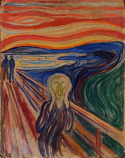

תוצרים בקורס תקשורת חזותית
בהנחיית נוהר רז-פוגל
במסגרת הקורס "תקשורת חזותית" ו"גרפיקה ממוחשבת" התבקשנו לבחור יצירה קיימת עבור פרוייקט הסיום שלנו.
בשיתוף חבריי לכיתה, חיים רזייב ועדיה ברקוביץ בחרנו את ציור "הצעקה" של אדוורד מונק שנוצרה בשנת 1893.
ראשית תיארנו את התמונה חזותי ופרשני, התחברנו מאוד לפירוש התמונה שמעידה על חזותה.
התרשמנו שהאמן נמצא באיזה שהיא מצוקה, שהצבעים ומשיכות המכחול ממחישות לנו את סערת הנפש שעוברת עליו.
קראנו שמונק כתב בקשר לתמונה כמה שורות אשר מתארות את תחושותיו לגבי הציור ושהציור
ייתכן ומתייחס לאחותו הסובלת מהפרעה דו קוטבית והייתה מאושפזת בבית חולים לחולי נפש.
מונק כתב בהקשר לציור :
"הלכתי לאורך שביל עם שני ידידים
השמש נטתה לשקוע
לפתע האדימו השמיים כדם
עצרתי, כוחי תש, ונשענתי על הגדר
היה דם ולשונות אש מעל הפיורד הכחול
שחור ומעל העיר
ידידיי הוסיפו ללכת, ואני עמדתי שם רועד מחרדה
וחשתי צעקה אין סופית עוברת בטבע".
הציור המקורי של מונק:

שנית התבקשנו להציג את הגרסה שלנו. חשבנו רבות כיצד נציג את המצוקה הנפשית שמונק מציג ביצירתו.
החלטנו נציג את הגרסה שלנו כגרסה מהעולם המודרני שנת 2018.
בחרנו ליצור סביבה לאדם במצוקה אך שעל פניו משדר לעולם אושר ושמחה באמצעות הרשתות החברתיות.
רוצים לראות את היצירה בגודלה המלא ? ליחצו עליה :)
סרטון הסבר על היצירה: